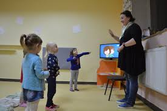

Любий друже, чи відомо Тобі, для чого потрібно вчити іноземну мову?
З її допомогою Ти зможеш подорожувати світом, спілкуватися з друзями за кордоном,
обрати професію, яка Тобі до вподоби. Мрієш стати зіркою телебачення, всесвітньо
відомим спортсменом або зробити блискучу політичну кар’єру?Без іноземної Тобі точно не обійтися!
Пам’ятай! Щоб вивчити мову, потрібно розмовляти нею
Навчайся граючись
Вивчення мови — це весела справа. Багато нових слів можна вивчити, граючи
в Твої улюблені онлайн-ігри. Наприклад, така гра, як Monkey Puzzle стане в
нагоді тим, хто тільки починає вивчати мову. Збираючи пазли зі слів та
відповідних їм картинок, не лише повторюєш нові слова або закріплюєш вже відомі, але й тренуєш пам’ять.

Розуміючи, що говорять інші, та вміючи правильно відповісти, Ти завжди відчуватимеш себе впевнено.
Прокачай свою англійську
Пам’ятай! Щоб вивчити мову, потрібно розмовляти нею
Любий друже, чи відомо Тобі, для чого потрібно вчити іноземну мову?
З її допомогою Ти зможеш подорожувати світом, спілкуватися з друзями за кордоном,
обрати професію, яка Тобі до вподоби. Мрієш стати зіркою телебачення, всесвітньо
відомим спортсменом або зробити блискучу політичну кар’єру? Без іноземної мови Тобі точно не обійтися!
Читай книжки
Намагайся читати зарубіжні казки, дитячі детективи, фентезі в оригіналі.
Так Ти зрозумієш, як носії мови будують речення, та дізнаєшся багато нових висловів.
Якщо Ти почав займатися англійською нещодавно й розумієш дуже обмежену кількість слів,
спробуй почитати «Кіт в капелюсі» (The Cat in the Hat) Доктора Сьюза, та «Дім на пагорбі»
(The House оn the Hill) письменниці Елізабет Лейрд. Трохи складніша книга, що потребує знання
різних часів, — це «Шлях у нікуди» (Road to Nowhere) Джона Мілна.
Якщо Ти почав займатися англійською нещодавно й розумієш дуже обмежену кількість слів,
спробуй почитати «Кіт в капелюсі» (The Cat in the Hat) Доктора Сьюза, та «Дім на пагорбі»
(The House оn the Hill) письменниці Елізабет Лейрд. Трохи складніша книга, що потребує знання
різних часів, — це «Шлях у нікуди» (Road to Nowhere) Джона Мілна.
Якщо Ти почав займатися англійською нещодавно й розумієш дуже обмежену кількість слів,
спробуй почитати «Кіт в капелюсі» (The Cat in the Hat) Доктора Сьюза, та «Дім на пагорбі»
(The House оn the Hill) письменниці Елізабет Лейрд. Трохи складніша книга, що потребує знання
різних часів, — це «Шлях у нікуди» (Road to Nowhere) Джона Мілна.
Якщо Ти почав займатися англійською нещодавно й розумієш дуже обмежену кількість слів,
спробуй почитати «Кіт в капелюсі» (The Cat in the Hat) Доктора Сьюза, та «Дім на пагорбі»
(The House оn the Hill) письменниці Елізабет Лейрд. Трохи складніша книга, що потребує знання
різних часів, — це «Шлях у нікуди» (Road to Nowhere) Джона Мілна.